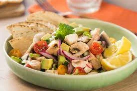
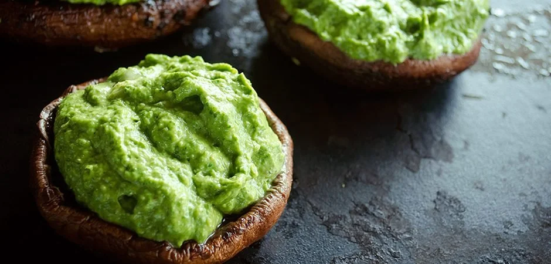
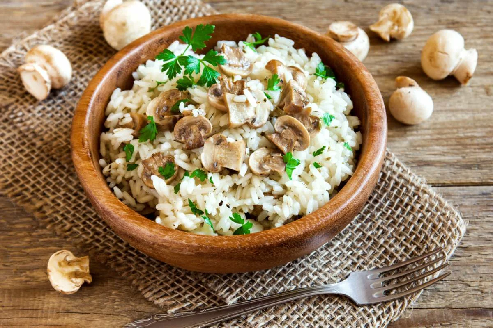
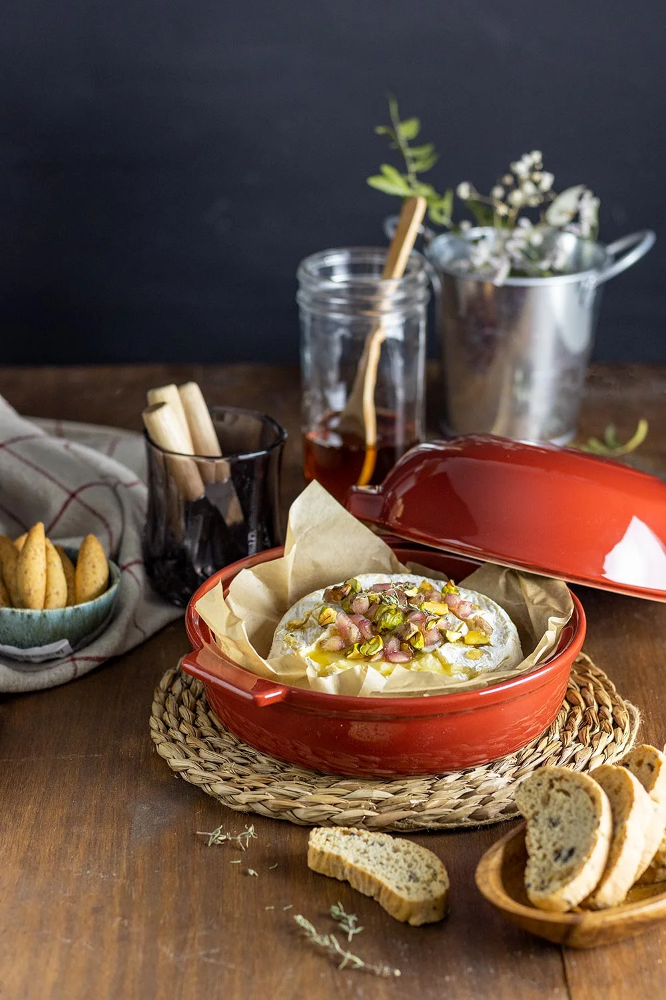
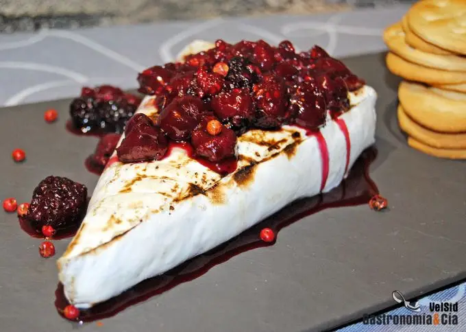
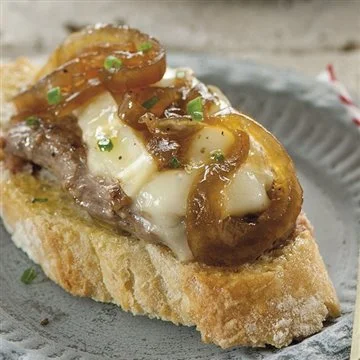
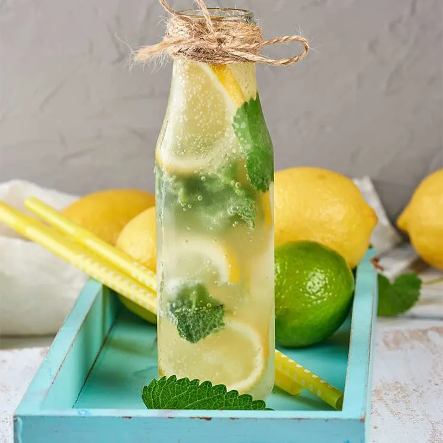
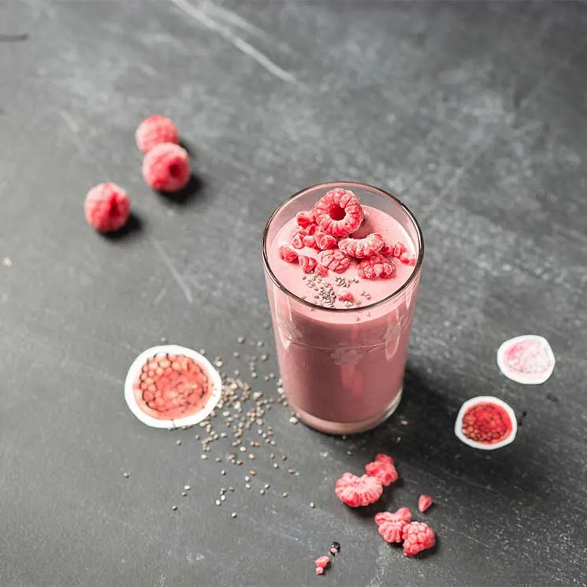
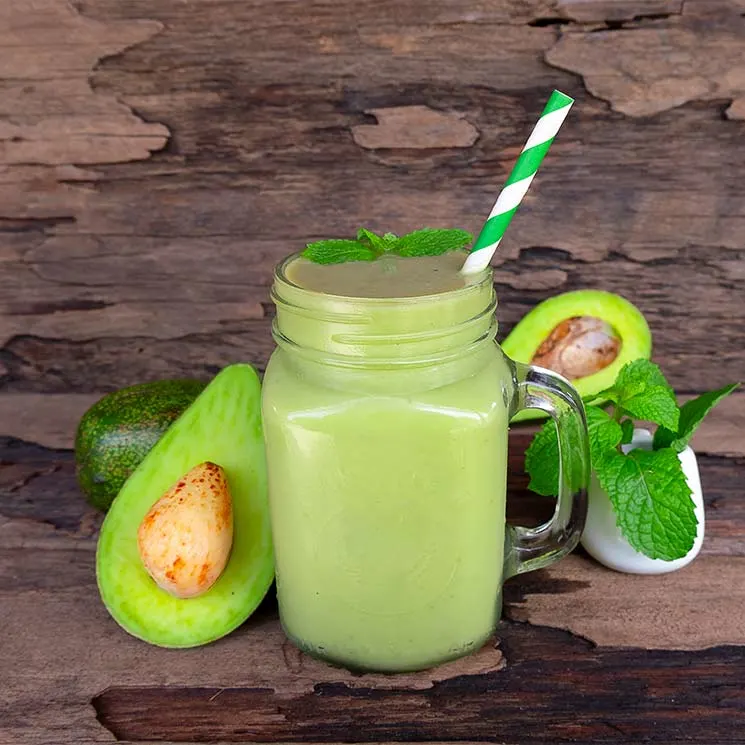

RECETAS CON HONGOS
Portobellos Con Queso

Ingredientes
1 Paquete Queso crema a temperatura ambiente (190 g).
1 Paquete Queso de cabra (200 g).
1 Cucharadita Sazonador Líquido.
1/4 Taza Aceite de maíz.
1 Cucharadita Ajo picado finamente.
1/4 Pieza Cebolla picada finamente.
3 Cucharadas Salsa Tipo Inglesa .
3 Cucharadas Sazonador Líquido.
1 Cucharadita Salsa Tipo Inglesa.
4 Hongos Portobellos.
1 Taza Jitomate cherry.
5 Ramitas Perejil fresco y picado finamente.
Ceviche De Champiñones
Ingredientes
200 gr de champiñones, limpios y laminados
3 cebollines picados en rodajas
1 pimentón rojo, picado en cubos pequeños
7 cucharadas de jugo de limón
4 cucharadas de jugo de naranja
4 cucharadas de aceite de oliva
½ cucharadita de Jengibre Molido Gourmet
Sal de Mar Gourmet a gusto
Pimienta Negra Molida Gourmet a gusto
1 palta, picada en cubos
½ taza de cilantro picado
Guacamole Con Portobellos
Ingredientes
250 gramos de portobellos grandes.
1 cda sopera de aceite de oliva.
1/4 de cebolla.
1 palta.
Sal fina, orégano, pimentón, pimienta negra y jugo de limón.
Arroz Con Champiñones
Ingredientes
320 g. de arroz para Risotto Scotti
1 l. de caldo de verduras
500 g. de setas variadas: en este caso champiñones comunes o Portobello
1 cebolla grande
40 g. de mantequilla
½ vaso de vino blanco
1 diente de ajo grande
100 g. de queso curado o semicurado
50 ml. de aceite de oliva virgen extra
Sal y pimienta negra recién molida (al gusto de cada casa)
1 cebolla mediana, un puerro, 2 zanahorias, aceite de oliva y sal.
RECETAS CON QUESO BRIE
Tosta De Rosbif Con Queso Brie

Ingredientes
8 rebanadas de pan casero medianas
400 gramos de ternera en una pieza para roast beef
100 mililitros de vino blanco
150 gramos de queso brie
100 gramos de mermelada de frutos rojos
75 gramos de pistachos
40 gramos de brotes tiernos de lechuga
Hierbas aromáticas
Sal
Pimienta
Aceite de oliva
Queso Brie Al Horno De Barro
Ingredientes
400 g queso (un queso brie entero)125 g nueces (sin cáscara)
150 g uvas (uvas sin pepitas, lavadas)
2 rama tomillo (tomillo fresco)
2 manzanas (lavadas, cortadas en gajos)
200 g pan (tostado en rebanadas)
Queso Brie Caliente Con Frutos Rojos
Ingredientes
1 porción de queso brie
100 gramos de frutos rojos congelados
30 gramos de azúcar moreno
1 c/c de pimienta rosa
una pizca de sal.
Montadito Ternera Con Queso Brie
Ingredientes
2 filetes de ternera
100 gramos de queso brie
4 rebanadas de pan
Aceite de oliva
Pimienta negra
Sal
3 cebollas
3 cucharadas de azúcar moreno
RECETAS CON FRUTAS CONGELADAS
Gazpacho De Sandía Congelada

Ingredientes
400 g de Sandía congelada
1 chorrito de Zumo de tomate
0.5 unidad de Pepino
0.5 diente de Ajo
0.5 unidad de Cebolla
Vinagre, aceite de oliva virgen y Sal.
Limonada Super Fresca
Ingredientes
Lima congelada
3 rodajitas de jengibre
3 hojas de menta fresca, Agua y hielo
1 sobre de edulcorante
Smoothie De Frambuesas
Ingredientes
2 yogur griego
125 gr. de frambuesas congeladas.
miel
Smoothie De Aguacate
Ingredientes
½ aguacate maduro
Jugo de limon
150 ml de leche de avena
Ralladura de limón, una cucharada
Media cucharada de esencia de vainilla
Una cucharada de miel
Hielo picado 2 cucharadas